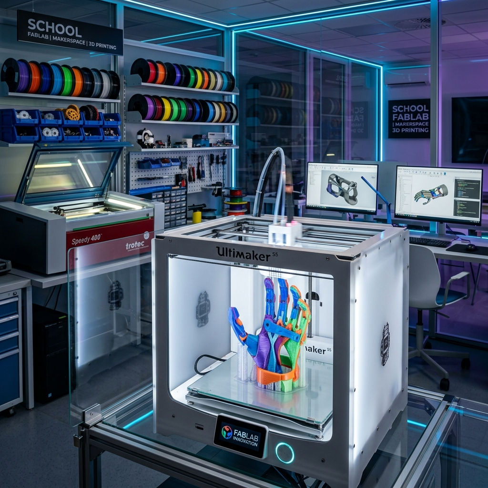

Espaço Inova Vinhedo
A revolução da educação científica e acessibilidade na rede pública. O maior legado tecnológico para a juventude de Vinhedo/SP.

O Desafio da Educação e Inclusão em Vinhedo
Embora Vinhedo tenha uma rede escolar de excelência, identificamos gargalos urgentes que demandam inovação rápida e verba carimbada:
-
science
Carência de Laboratórios Práticos
A maioria das escolas do município não possui estrutura física ou recursos para o ensino prático e experimental de física, química e matemática.
-
accessibility_new
Barreiras no Aprendizado Especial (AEE)
Mais de 250 alunos com autismo, dislexia ou limitações motoras necessitam de adaptadores de escrita e jogos táteis exclusivos, indisponíveis no varejo comum.
A Resposta: Viabilização de Kits Didáticos e Acessibilidade
O Espaço Inova Vinhedo será um laboratório de fabricação digital (FabLab) centralizado focado na viabilização e no fornecimento de kits pedagógicos e materiais de acessibilidade de alta qualidade para a rede municipal, além de ser um centro de formação.
-
school
Kits Pedagógicos e Prática Ativa
Desenvolvimento e montagem de kits modulares e dinâmicos para tornar as aulas mais interativas, práticas e conectadas com a realidade dos alunos.
-
precision_manufacturing
Viabilidade de Insumos
Modelo operacional baseado na aquisição de materiais novos, duráveis e de baixo custo, garantindo padronização pedagógica e total autonomia produtiva.
Possibilidade de Ação Didática
O laboratório oferece uma possibilidade prática de ação e suporte para a rede, fabricando kits didáticos e adaptadores a partir de insumos novos de baixo custo combinados com economia circular.
Possibilidade 1: Kits Didáticos de Ciência
Atuamos como um recurso pedagógico auxiliar e prático para as escolas municipais, apoiando o ensino científico de transição enquanto a implantação de laboratórios físicos permanentes é estruturada.
-
construction
Kits de Ciências e Física Prática
Modelos funcionais de roldanas, engrenagens mecânicas, planos inclinados e kits experimentais de ótica e refração de luz confeccionados localmente.
-
category
Kits de Geometria e Biologia
Sólidos geométricos interativos desmontáveis e maquetes tridimensionais de anatomia e células biológicas para compreensão tátil de abstrações.
Eficiência e Autonomia Operacional
A produção própria de kits didáticos de polias, óptica e geometria no Espaço Inova viabiliza o acesso a materiais científicos interativos com uma economia drástica em relação aos preços do mercado tradicional.
Possibilidade 2: Inclusão Escolar Sem Barreiras
Garantimos materiais pedagógicos acessíveis e adaptadores físicos para que alunos do Atendimento Educacional Especializado (AEE) tenham inclusão plena.
-
edit_square
Adaptadores de Escrita e Desenho
Engrossadores de lápis personalizados impressos em material flexível (TPU), desenhados ergonomicamente para a pegada de cada aluno.
-
spellcheck
Alfabetização Fonética e Tátil
Letras táteis em MDF, tabuleiros de comunicação alternativa e pranchas de sinalização escolar adaptadas em braille e relevo.
Impacto na Acessibilidade Local
O fomento direcionado permite equipar as salas de recursos com kits estruturados de comunicação, além de fornecer adaptadores ergonômicos individuais sob medida de acordo com as necessidades dos estudantes.
Possibilidade 3: Oficinas de Robótica e Codificação
Capacitamos a juventude no contraturno escolar em conhecimentos de programação, eletrônica e robótica prática de baixo custo.
-
memory
Eletrônica com Arduino e ESP32
Aulas práticas de montagem de circuitos, sensores de presença e controle robótico integrado com componentes didáticos.
-
model_training
Oficina Jovem Inventor Inclusivo
Alunos das turmas regulares e alunos do AEE projetam em duplas soluções maker reais para problemas físicos de acessibilidade identificados em suas escolas.
Cidadania Científica e IDEB
A promoção da cultura maker e robótica desperta talentos científicos, prepara para o mercado da Indústria 4.0 e melhora a retenção escolar na rede pública de Vinhedo.
Possibilidade 4: Prototipagem de Apps com IA
Criamos um ecossistema de prototipagem ágil de softwares e aplicativos voltado para resolver demandas reais da administração municipal a custo próximo de zero.
-
smart_toy
Desenvolvimento Acelerado por IA
Utilização de assistentes de código e plataformas no-code/serverless para criar ferramentas funcionais de gestão e agendamento em poucos dias.
-
school
Oficinas de Vibecoding e Letramento
Alunos do Ensino Fundamental desenvolvem o pensamento computacional da BNCC e professores aprendem a automatizar tarefas de rotina com IA.
Entregas de Baixa Fricção (Fase 1-A)
Prototipagem rápida de sistemas de agendamento de salas de recursos, inventário de maletas de ciências e painéis digitais de acompanhamento (PEI) para a rede municipal.
O Legado Político e de Comunicação Social
Investir verbas de emendas no Espaço Inova Vinhedo associa o nome do parlamentar a um projeto inovador e amplamente replicável:
Selo do Parceiro nos Kits Didáticos
Todos os kits de física e materiais pedagógicos distribuídos levarão gravação física (marca permanente a laser) indicando o apoio..
Visibilidade de Imprensa e Feira Municipal
Divulgação da inauguração, matérias de impacto nos jornais da região metropolitana de Campinas e destaque na Feira Anual de Inovação Pedagógica.
Um Modelo Nacional de Educação
O repositório aberto de arquivos do Espaço Inova indicará os créditos da emenda fundadora de fomento. Qualquer município do Brasil que baixar as soluções de acessibilidade verá quem tornou o laboratório viável.
Como a Sua Emenda Transforma a Rede
Programa de Acessibilidade Pedagógica
Custeia o estoque contínuo de insumos e a fabricação sob demanda de adaptadores de escrita ergonômicos e acionadores táteis personalizados para o AEE.
- check_circle Abastecimento das salas de recursos multifuncionais do AEE da rede.
- check_circle Confecção de recursos ergonômicos personalizados para os alunos.
- check_circle Gravação do selo nas placas táteis e materiais pedagógicos.
Programa de Apoio Científico Móvel
Viabiliza a aquisição de insumos estruturados de engenharia física para montar maletas científicas portáteis e kits didáticos práticos de ciências.
- check_circle Envio de laboratórios móveis de física e óptica para apoio pedagógico.
- check_circle Produção contínua de kits experimentais funcionais e duráveis.
- check_circle Placa física permanente na entrada do laboratório.
Programa Escola do Futuro e IA
Viabiliza a infraestrutura digital e as oficinas de robótica no contraturno, juntamente com o ecossistema de prototipagem de apps voltados à cidadania com IA.
- check_circle Implementação de oficinas práticas de robótica e eletrônica.
- check_circle Prototipagem rápida de apps voltados à gestão cívica e letramento digital.
- check_circle Co-autoria da Feira de Inovação Pedagógica municipal.
Viabilize o Espaço Inova Vinhedo
O plano de implantação física e operacional do laboratório está em fase de estruturação e apoia-se na necessidade de colaboração intersecretarias para integrar as áreas de ensino, tecnologia e infraestrutura municipal de forma robusta e integrada.
Para garantir a destinação da emenda de fomento com segurança jurídica e fiscal, providenciamos os seguintes marcos técnicos:
-
description
Minuta e Projeto de Lei Prontos
Disponibilizamos o projeto básico detalhado estruturado e a minuta de indicação legislativa para encaminhamento célere da emenda.
-
verified
Garantia de Destinação Carimbada
O repasse impositivo é blindado e vinculado à Ação Programática na LOA do município, impedindo remanejamentos pelo caixa único municipal.
Dados Técnicos para Destinação
Órgão Destinatário: Prefeitura Municipal de Vinhedo/SP
Programa LOA/PPA: Ação Inovação Tecnológica e Acessibilidade no AEE
Equipe de Contato: gabinete@vinhedo.sp.gov.br